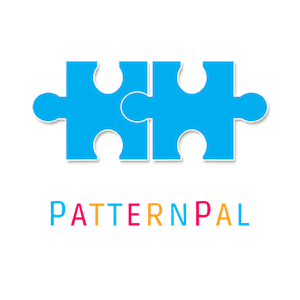

About
I designed PatternPal, a mobile application aimed at helping children with autism gain more independence in performing daily tasks.
Background
My Role: UI Designer, Graphic Designer
Date: Jan 2016 - Apr 2016
UM Course: Mobile App Development for Entrepreneurs
Tools: Sketch, Photoshop CS6
The Problem
Children with autism spectrum disorder experience trouble with a wide range of tasks with varying degrees of difficulty. Among these issues, some often have difficult shifting their attention to perform daily activities.
Project Aims
This mobile app aims to help kids around the ages of 5-10 years old with autism gain more independence by helping direct them to perform specific activites through positive reinforcement and real-word cues. Connected to iPad stations in the home, a user would be signaled to complete certain tasks throughout the day with fun countdowns, light interactions, and sound. Additionally, PatternPal would benefit caretakers by allowing them to easily create task lists and schedules for the child.
Discovery of the Problem
Background Research: Background research was conducted to gain insight into mobile app solutions
for children with autism. Competitive analysis was also conducted by the team to understand the market and
how our app would be unique. The team looked across 5-7 mobile apps for autism and compared features.
Persona Development: The team then developed personas for children with autism, parents of children with
autism, and caretakers. Each persona included information regarding their goals, what they think, see, feel, and
do.
Ideating
Low Fidelity Wireframes: I sketched out intitial designs on paper and discussed these sketches with my team members.
During this phase, we decided on what main features to develop for our first MVP.
High-fidelity Wireframes: I designed high fidelity wireframes using Sketch and Photoshop CS6 for our first MVP.
Building
I collaborated with our app developers and communicated task flows to generate the user interface and interactions. (Limitations: Due to timing and funding constraints, we were unable to conduct any user testing).